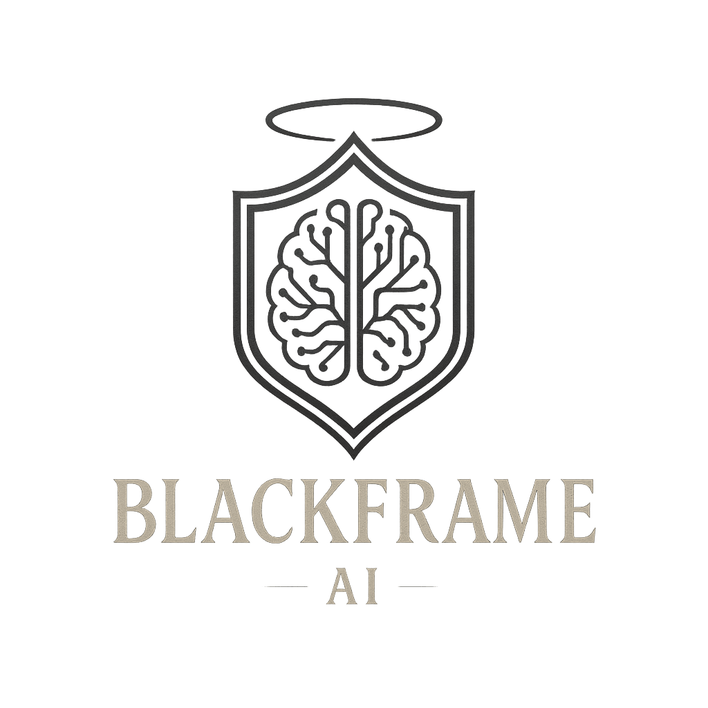

We built BlackFrame, the world's first AI generated dual use engine
BlackFrame AI is an independent studio proving that agentic development can ship production-grade technology. BlackFrame Engine is the first verifiable AI-generated dual use engine, with Codex writing the scaffolding, architecture, and subsystems while our team enforced audits, policy, direction, and red-team gates that kept the build verifiable.
The same runtime that renders stylized encounters also routes telemetry into our quantum simulator suite, giving partners a plug ready path for hardware in the loop experiments on real quantum devices when they are available, with policy locks that document every escalation path.
BlackFrame AI is an underdog studio led by James Elliott
James Elliott rebuilt his life after years in survival mode, guided by trusted mentors who helped him focus on craft, accountability, and community. He now leads BlackFrame AI Studio as a visibly disabled founder with more than a decade clean and no prior engine experience.
Relentless transparency
Every build log, policy call, and audit is preserved so partners can verify how an unemployed founder and agents built the engine.Community-first
Outside the lab, James explores FFR theory and alt-history on YouTube to spark curiosity without dogma.Verified milestone
We define an AI-generated engine as a complete, runnable engine whose source scaffolding, architecture, and iterative code were authored by a large language model operating under autonomous or semi-autonomous control.
82%
Average reduction in prototype assembly time.
6 hrs
Fastest Codex-guided sprint to playable sandbox.
4×
Increase in narrative iteration cadence.
What We're Building
- BlackFrame Engine: A hybrid rendering and simulation toolkit tuned for stylized sci-fi worlds and operational training scenarios.
- Creator Co-Pilots: Workflow agents that help writers, level designers, mission planners, and live ops teams move faster.
- Quantum and Entropy Labs: Custom simulators, entropy injectors, and hardware bridges.